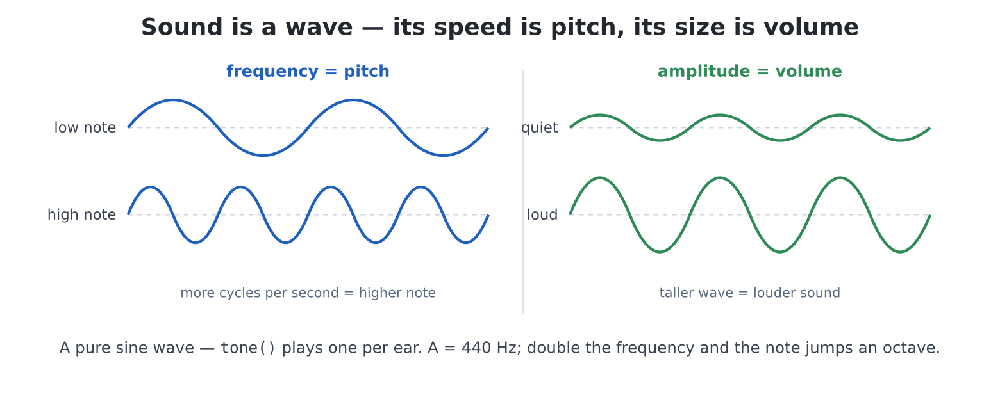

The machine has been beeping at you since chapter 2; time it learned to sing. Behind the 3.5 mm jack sits a proper audio DAC and four different noise-making engines — a file player, a tone generator, a four-voice synthesiser and an Amiga-style music tracker — all running in the background, so the prompt (and your game loop) never waits for a note to finish. Plug in the headphones or speakers from chapter 2 and set a civilised volume before anything else:
volume(60)
beep()Anything musical you can put on the SD card, the machine plays:
# also .wav, .flac, .mod -- by extension
play("/sd/music/song.mp3")…and keeps playing while you type, draw, or run a program —
audio lives on its own machinery. The transport controls are what you’d
hope: pause(), resume(), stop(),
is_playing(), and volume(v) (0–100;
volume() reads it back). play(path, wait=True)
blocks until the song ends, for the rare time you want that. You met the
friendly face of all this in chapter 4 — fm’s Enter-to-play
is play().
Everything else in this chapter is built on one fact: a musical note is a frequency, in vibrations per second (Hz). The A that orchestras tune to is 440 Hz; doubling a frequency raises the note an octave (880 is also an A, higher); and the familiar do-re-mi steps fall at well-known values in between. One octave’s worth, rounded to whole Hz:
| C | D | E | F | G | A | B | C5 |
|---|---|---|---|---|---|---|---|
| 262 | 294 | 330 | 349 | 392 | 440 | 494 | 523 |
That table is about to become a dictionary, because — chapter 10 reflex — a melody is data: notes and durations, in a list.

tone(): two sine
waves, endless patiencetone(440) # A, both ears, until further notice
tone(440, 880) # different note in each ear
tone(262, 262, 500) # middle C for exactly half a second
stop()Two channels (left, right), pure sine waves, and two properties that
matter more than they look. A timed tone ends at a zero
crossing — no click, ever. And calling tone()
while a tone plays retunes it seamlessly — which means a melody
is just a loop of tone() calls, and (challenge 1) a held
piano key can glide between notes like a singer.
tone(f, f, ms, wait=True) blocks for the duration — the
building block of the project below.
Coming from MMBasic:
PLAY TONE,PLAY SOUND,PLAY MODFILEandPLAY MODSAMPLEall kept their behaviour — tones retune live and end click-free, the synth’s waveform letters are unchanged, andplay()dispatches files the wayPLAYalways did.
Melody as data, player as machinery — the quiz of chapter 10, reborn
as an instrument. edit("tunes.py"):
import time
NOTES = {"C": 262, "D": 294, "E": 330, "F": 349,
"G": 392, "A": 440, "B": 494, "C5": 523}
ODE = [("E", 1), ("E", 1), ("F", 1), ("G", 1),
("G", 1), ("F", 1), ("E", 1), ("D", 1),
("C", 1), ("C", 1), ("D", 1), ("E", 1),
("E", 1.5), ("D", 0.5), ("D", 2)]
def play_tune(melody, bpm=120):
beat = 60 / bpm
for note, beats in melody:
ms = int(beats * beat * 1000)
# a rest: silence, same length
if note == "R":
time.sleep(ms / 1000)
else:
tone(NOTES[note], NOTES[note], ms, wait=True)
# a breath between notes
time.sleep(0.02)
play_tune(ODE, 140)Beethoven, in fifteen tuples. The design is the chapter 10 lesson at
full power: to play a different tune you write a different list
— play_tune never changes. Transcribe something you love
(sheet music optional: hum, hunt the table, adjust), and note the little
0.02 breath — without it, repeated notes merge into one
long one. Real instruments articulate; so must yours.
sound(): the
four-voice synthesisertone() is pure and polite. sound() is an
instrument panel — four independent voices, each with a waveform, a
side, a frequency and a volume, all changeable live:
sound(1, "B", "S", 440) # voice 1: Sine, Both ears, 440 Hz
# voice 2: Square wave, Left, quieter
sound(2, "L", "Q", 110, 15)
sound(3, "R", "N", 1000) # voice 3: white Noise, Right
sound(2, "L", "O", 1) # voice 2 Off
stop() # everything offThe waveform letters: Sine (smooth),
sQuare (buzzy, the 8-bit classic),
Triangle (soft), W sawtooth (brassy),
Periodic noise (rumbling) and N white
noise (hiss, surf, explosions) — plus Off. Volume runs
0–25 per voice (four at full volume exactly fill the output),
and changes ramp over a few milliseconds so nothing clicks. Three voices
make a chord; a loop that nudges a frequency makes a siren; noise with a
falling volume makes the sea. The synthesiser is sound()
called in loops — which is precisely the project:
Every game in Part IV needs a laser, an explosion, a jump and a coin.
Build them once, as a library — with a twist at the bottom worth the
chapter. edit("sfx.py"):
# sfx.py -- game sound effects. import sfx; sfx.coin()
import time
from pcaudio import sound, tone, stop
def laser():
for f in range(2000, 200, -150): # a fast falling sweep
sound(1, "B", "Q", f, 20)
time.sleep(0.01)
sound(1, "B", "O", 1)
def boom():
for v in range(25, 0, -2): # noise, fading out
sound(4, "B", "N", 400, v)
time.sleep(0.03)
sound(4, "B", "O", 1)
def jump():
for f in range(200, 900, 60): # a quick rising chirp
sound(2, "B", "T", f, 18)
time.sleep(0.008)
sound(2, "B", "O", 1)
def coin():
tone(988, 988, 80, wait=True) # the two-note classic
tone(1319, 1319, 200, wait=True)
def siren(times=3):
for _ in range(times):
for f in (list(range(600, 1200, 25))
+ list(range(1200, 600, -25))):
sound(3, "B", "S", f, 16)
time.sleep(0.006)
sound(3, "B", "O", 1)
if __name__ == "__main__":
import keyboard
from keyboard import keydown
print("SFX BOARD -- 1 laser 2 boom 3 jump 4 coin 5 siren "
" Esc quits")
while True:
k = keydown(1)
if k == ord("1"):
laser()
elif k == ord("2"):
boom()
elif k == ord("3"):
jump()
elif k == ord("4"):
coin()
elif k == ord("5"):
siren(1)
elif k == keyboard.ESC:
break
time.sleep(0.02)
stop()Run it and you have a noise machine; the sounds themselves are frequency sweeps and volume fades — loops, wearing sound-designer trousers. Change a range and the laser becomes a phaser; that is the craft, and it is cheaper to explore than any synthesiser ever sold.
Now the twist:
if __name__ == "__main__":. When a file is
run, Python names it "__main__"; when it is
imported, it gets its own name ("sfx"). So
everything under that line happens only when the file runs as a program
— run("sfx.py") gives you the demo board, while
import sfx in a game gives you silent, obedient functions
and no demo. One file, both careers. Every library you write
from today deserves this: its functions above the line, a demonstration
below.
And that import at the top —
from pcaudio import sound, tone, stop — is the same lesson
seen from the other side. At the prompt, and in any program you
run(), the board has already laid the table:
sound, tone, keydown and friends
are simply there, because boot places them in the main
program’s namespace and run() hands each program a copy. An
imported module gets no such treatment:
import sfx gives sfx.py its own clean
namespace, and a bare sound() inside it would die with
NameError: name 'sound' isn't defined. So a library must
import what it uses, from the module each name really lives in — sounds
from pcaudio, keydown from
keyboard, colours from pcgfx, the display from
hdmi (Appendix C maps every boot name to its home module).
Programs may eat from the table they’re given; libraries pack their own
lunch.
One format got special treatment: the Amiga MOD
file, the format an entire generation of games shipped their
music in. A .mod is sheet music and orchestra in one
file — instrument samples plus the patterns that play them —
usually well under 100 KB. The internet’s tracker archives hold decades
of them (mind the licences), and every MMBasic-era trick works here:
play("/sd/game.mod", loop=True) # background music, forever
# fire instrument 3 as a sound effect
mod_sample(3)
mod_sample(7, rate=24000) # instrument 7, pitched uploop=True is the game-music switch. And
mod_sample is the deep cut: it plays one of the song’s
own instruments on a spare channel, mixed over the
music without interrupting it — your shots and pickups
literally scored in the same instruments as the soundtrack, one file for
the whole audio identity of a game. Chapter 24 uses exactly this.
play_tune with every
frequency doubled is the same music an octave up (where do you make the
change — the data, or the machinery? Argue it, then do it in the
machinery).NOTES is missing sharps —
"F#": 370, "G#": 415, "A#": 466,
"C#": 277, "D#": 311. Add them and transcribe
something that needs one.tone(440, 444) — two ears, four Hz apart.
The slow wobble you hear is real physics (beats — the
frequencies drifting in and out of step) and no instrument in this book
demonstrates it better.sfx.py: a power-up (rising
sweep that ends in a coin), an alarm (two squares a
semitone apart), or rain (quiet P noise, long fade). Name
it, test it, keep it.a s d f g h j k are C
to C5 (chapter 10: a dictionary from key code to frequency). Poll
keydown(1): key held → tone() that note
(retuning live gives glissando for free!); no key → stop().
Twenty lines, one real instrument.ask_int an alarm time (chapter
13’s handy), show it on the face, and at the appointed
minute play_tune something insistent until a key is
pressed. /main.py-worthy — this is a genuinely useful
bedside machine.random.choice picks one,
play_tune it, the player guesses from a printed menu —
scorelib keeps the championship. Chapters 8, 10, 12 and 20,
one parlour game..mod
(or three) onto the SD card, then write the audition rig: play each
looped for ten seconds, mod_sample a few instruments over
it while it plays, and print which instruments would make good
laser/boom/coin sounds. You are casting the orchestra for chapter 24’s
shooter.